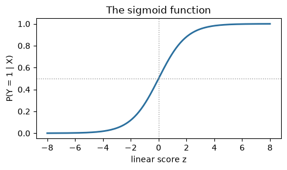
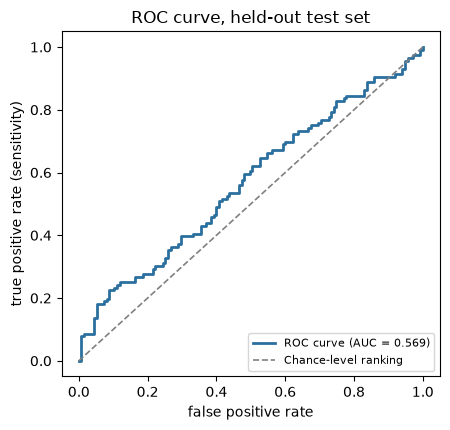
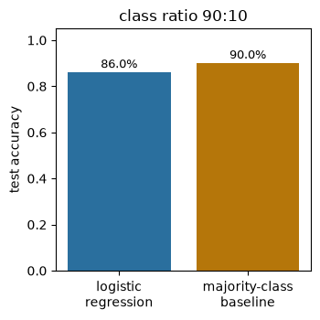

Exercise 4: Classification with Logistic Regression#
Run or download this notebook
This page is fully readable as it is, and the interactive activities work here in the browser. To run or change the Python code, use the portable version of the notebook:
View or download the portable
.ipynbfor VS Code or Jupyter
The portable notebook keeps every Python analysis cell and swaps the two embedded activities for links back to this page.
What this notebook covers#
This is Exercise 4 of Machine Learning for Neuroscience. Exercises 2-3 used ABIDE’s rich neuroimaging table to ask a regression question: predicting a participant’s age from cortical structure. Autism diagnosis – ABIDE’s own central scientific question – has not yet been addressed. This practice builds one classifier: predicting autism diagnosis from the same brain measurements, tested on participants it has not seen.
In this notebook you will:
look at the ABIDE data used for classifying autism diagnosis;
turn a logistic-regression score into a probability;
build one logistic-regression classifier and test it on participants it has not seen;
read a confusion matrix, and compute accuracy, sensitivity, and specificity from it, plus an ROC curve and AUC;
use a browser activity to explore how changing the decision threshold changes those measures;
see why accuracy can be misleading when one diagnosis group is much larger than the other.
Prerequisites: Exercise 2’s train/test workflow, StandardScaler,
Pipeline / fit / predict in scikit-learn, and testing a model on
held-out participants (Exercises 2-3’s comparison of correct and misleading
evaluation methods, including resubstitution – this notebook does not
repeat that demonstration a third time).
1. The ABIDE classification data#
ABIDE’s own central scientific distinction is autism diagnosis.
Exercises 2-3 used this same rich dataset to ask a regression question about
age instead; this notebook returns to ABIDE’s original question. The table
itself is unchanged: the same 1004-participant data table, one row per
participant, with the same 360 bilateral cortical-thickness (fsCT) columns
used throughout Exercises 2-3.
data table: 1004 participants x 1446 columns
# group: 1 = autism, 2 = control -- native to this table, no join needed.
# A compact preview plus class counts and a missingness statement.
preview_cols = ["subject", "site", "group", "age", "sex", "fsCT_L_46_ROI"]
display(model_df[preview_cols].head(3))
class_counts = model_df["group"].value_counts().sort_index()
n_autism = int(class_counts.get(1.0, 0))
n_control = int(class_counts.get(2.0, 0))
n_missing_group = int(model_df["group"].isna().sum())
n_dup_subjects = int(model_df["subject"].duplicated().sum())
print(f"class counts: {n_autism} autism (group=1), {n_control} control (group=2)")
print(f"missing diagnosis: {n_missing_group} of {len(model_df)} participants")
print(f"duplicate participant ids: {n_dup_subjects}")
| subject | site | group | age | sex | fsCT_L_46_ROI | |
|---|---|---|---|---|---|---|
| 0 | 29293 | ABIDEII-KKI_1 | 1.0 | 8.893151 | 2.0 | 2.366 |
| 1 | 28997 | ABIDEII-OHSU_1 | 1.0 | 12.000000 | 2.0 | 2.579 |
| 2 | 28845 | ABIDEII-GU_1 | 2.0 | 8.390000 | 1.0 | 2.690 |
class counts: 463 autism (group=1), 541 control (group=2)
missing diagnosis: 0 of 1004 participants
duplicate participant ids: 0
Think first
For this table, what does one row represent, and what does the target for this notebook represent? (They are not the same kind of thing as Exercise 2’s outcome.)
Check your reasoning
One row is still one participant – unchanged from Exercises 1-3. The target
for this notebook is group, recoded to a binary autism/control label: it
is a categorical diagnosis, not a continuous measurement like age. That
is the difference between this notebook’s task (classification) and
Exercise 2-3’s task (regression): the same rows and the same brain columns,
a different kind of outcome.
2. From a linear score to a probability#
Logistic regression starts exactly like linear regression: a weighted sum of the standardized features plus an intercept, \(z = w \cdot x + b\). Unlike linear regression, that score \(z\) is not the prediction itself – it is passed through the sigmoid function to become a probability between 0 and 1:
In plain language:
Logistic regression calculates a weighted linear score, exactly like linear regression’s \(z\).
The sigmoid squashes that score into a probability between 0 and 1.
A decision threshold, commonly 0.50, converts the probability into a predicted class: probability at or above the threshold predicts autism, below it predicts control.
This notebook does not derive the loss function logistic regression minimizes to find \(w\) and \(b\) – only what the fitted model outputs and how that output becomes a class label.
# A small, clean sigmoid figure: any real-valued score maps to (0, 1).
def sigmoid(z):
return 1.0 / (1.0 + np.exp(-z))
z_grid = np.linspace(-8, 8, 200)
fig, ax = plt.subplots(figsize=(5, 3))
ax.plot(z_grid, sigmoid(z_grid), color="#2a6f9e", lw=2)
ax.axhline(0.5, color="0.6", lw=1, ls=":")
ax.axvline(0, color="0.6", lw=1, ls=":")
ax.set_xlabel("linear score z"); ax.set_ylabel("P(Y = 1 | X)")
ax.set_title("The sigmoid function")
plt.tight_layout(); plt.show()

Think first
If two participants receive autism probabilities of 0.48 and 0.52, must their underlying model evidence be very different merely because their predicted labels differ?
Check your reasoning
No. At the default 0.50 threshold, 0.48 predicts control and 0.52 predicts autism – opposite labels – but the two probabilities themselves are nearly identical. The sigmoid is continuous: a tiny change in the linear score crossing the threshold flips the label while barely changing the model’s actual evidence. A predicted label is a summary of a probability, and near a threshold that summary can be almost arbitrary.
3. One logistic-regression model#
Target: diagnosis (group, recoded autism=1 / control=0). Positive
class: autism. Negative class: control. Predictors: the exact same
360 bilateral cortical-thickness (fsCT) columns used throughout Exercises
2-3 – no diagnosis-derived field, participant id, age, sex, site, or
behavioural score is a predictor. Split: a participant-level, stratified
75/25 train/test split, random_state=42 – the same fixed
random seed used throughout this course, chosen before this split was ever scored. Model:
StandardScaler (fit on training rows only) then LogisticRegression
using C = 1.0 for this example, fit on the training participants and
evaluated once on the test participants. A later lesson introduces
systematic methods for selecting C.
# The full set of 360 cortical-thickness columns -- identical recipe and
# code to Exercises 2-3's Section 2.
FEATURES = [c for c in BRAIN_COLS if c.startswith("fsCT_")]
assert all(c.startswith("fsCT_") for c in FEATURES) # brain-only
assert "group" not in FEATURES # no target leakage
print(f"{len(FEATURES)} features, e.g. {FEATURES[:3]}")
360 features, e.g. ['fsCT_L_V1_ROI', 'fsCT_L_MST_ROI', 'fsCT_L_V6_ROI']
# Brain-only X and binary target y. group has no missing values (checked
# above), so every one of the 1004 participants is usable here -- unlike
# Exercise 2's FIQ target, this notebook needs no row filtering.
X = model_df[FEATURES].to_numpy(float)
y = (model_df["group"] == 1).astype(int).to_numpy() # 1 = autism, 0 = control
# One fixed, reproducible, participant-level split, stratified by y itself
# (the diagnosis label) -- not by a covariate, since y IS diagnosis here.
X_train, X_test, y_train, y_test = train_test_split(
X, y, test_size=0.25, random_state=42, stratify=y
)
print(f"n_train = {len(y_train)} n_test = {len(y_test)} n_features = {X.shape[1]}")
print(f"train autism rate = {y_train.mean():.3f} test autism rate = {y_test.mean():.3f}")
n_train = 753 n_test = 251 n_features = 360
train autism rate = 0.461 test autism rate = 0.462
Choosing C for this example#
In this introductory exercise, we choose one model setting in advance, fit the model using the training participants, and evaluate it on the test participants. A later lesson will introduce systematic methods for selecting model settings.
C_EXAMPLE = 1.0
This is simply the value used for this worked example, chosen before the held-out result below is computed. It is not optimized, tuned, or chosen because it performed best.
C_EXAMPLE = 1.0
# Explicit scaling, written out: fit_transform LEARNS the training columns'
# means/standard deviations; transform then applies those SAME already-
# learned values to the test data -- the scaler is never fitted on the test
# set, exactly like Exercise 2's Section 2. Uses C = 1.0, the value chosen
# for this example, from above.
scaler = StandardScaler()
X_train_scaled = scaler.fit_transform(X_train)
X_test_scaled = scaler.transform(X_test)
explicit_model = LogisticRegression(C=C_EXAMPLE, max_iter=5000)
explicit_model.fit(X_train_scaled, y_train);
As in Exercise 2, scikit-learn’s make_pipeline bundles the scaler and the
classifier into one object so .fit() always scales before fitting and
.predict() / .predict_proba() always reuse the scaler already learned
from training data. This is the model used for the rest of this notebook.
# The pipeline shortcut: same two steps, bundled, with C = 1.0, the value
# chosen for this example. This is the model used for the rest of this notebook.
model = make_pipeline(StandardScaler(), LogisticRegression(C=C_EXAMPLE, max_iter=5000))
model.fit(X_train, y_train)
y_pred = model.predict(X_test)
y_proba = model.predict_proba(X_test)[:, list(model.classes_).index(1)]
assert np.array_equal(y_pred, explicit_model.predict(X_test_scaled)) # identical to the explicit version above
print("predicted labels and probabilities computed for the held-out test set.")
print("Every metric below uses only these 251 test participants -- none of them were used to fit the model.")
predicted labels and probabilities computed for the held-out test set.
Every metric below uses only these 251 test participants -- none of them were used to fit the model.
4. Classification outcomes and metrics#
A confusion matrix counts every combination of actual and predicted diagnosis on the held-out test set. Rows are the actual diagnosis, columns are the predicted diagnosis, and autism is the positive class:
Outcome |
Interpretation |
|---|---|
True negative |
A control participant is classified as control. |
False positive |
A control participant is classified as autistic. |
False negative |
An autistic participant is classified as control. |
True positive |
An autistic participant is classified as autistic. |
Accuracy is the proportion of all test participants classified correctly:
Two more specific rates matter as much as accuracy, especially under class imbalance (Section 6):
Sensitivity (recall): the proportion of actually autistic participants the model detects, \(TP/(TP+FN)\);
Specificity: the proportion of actually control participants the model correctly identifies, \(TN/(TN+FP)\).
A single threshold gives one confusion matrix. The ROC curve plots sensitivity against the false-positive rate (\(1-\mathrm{specificity}\)) as the threshold sweeps across every possible value, and AUC (area under that curve) summarizes ranking performance independent of any one threshold: 0.5 is chance-level ranking, 1.0 is perfect ranking.
# The test-set confusion matrix, accuracy, sensitivity, specificity,
# ROC curve, and AUC -- every number below uses only the 251 test
# participants excluded from fitting.
cm = confusion_matrix(y_test, y_pred, labels=[0, 1])
tn, fp, fn, tp = cm[0, 0], cm[0, 1], cm[1, 0], cm[1, 1]
accuracy = accuracy_score(y_test, y_pred)
sensitivity = tp / (tp + fn)
specificity = tn / (tn + fp)
auc = roc_auc_score(y_test, y_proba)
cm_labels = np.array([
[f"TN = {tn}", f"FP = {fp}"],
[f"FN = {fn}", f"TP = {tp}"],
])
cm_table = pd.DataFrame(
cm_labels, index=["actual control", "actual autism"], columns=["predicted control", "predicted autism"]
)
display(cm_table)
print(f"accuracy = {accuracy:.3f}")
print(f"sensitivity = {sensitivity:.3f} (proportion of autistic participants detected)")
print(f"specificity = {specificity:.3f} (proportion of control participants correctly identified)")
print(f"AUC = {auc:.3f} (0.5 = chance-level ranking, 1.0 = perfect ranking)")
| predicted control | predicted autism | |
|---|---|---|
| actual control | TN = 75 | FP = 60 |
| actual autism | FN = 54 | TP = 62 |
accuracy = 0.546
sensitivity = 0.534 (proportion of autistic participants detected)
specificity = 0.556 (proportion of control participants correctly identified)
AUC = 0.569 (0.5 = chance-level ranking, 1.0 = perfect ranking)
# ROC curve.
fpr, tpr, _ = roc_curve(y_test, y_proba)
fig, ax = plt.subplots(figsize=(4.6, 4.4))
ax.plot(fpr, tpr, color="#2a6f9e", lw=2, label=f"ROC curve (AUC = {auc:.3f})")
ax.plot([0, 1], [0, 1], "--", color="0.5", lw=1.2, label="Chance-level ranking")
ax.set_xlabel("false positive rate"); ax.set_ylabel("true positive rate (sensitivity)")
ax.set_title("ROC curve, held-out test set")
ax.legend(loc="lower right", fontsize=8)
plt.tight_layout(); plt.show()

This discrimination is modest, not strong – reported plainly rather than dressed up. This split estimates generalisation to new participants drawn from these same 17 ABIDE-II sites; it is not evidence of generalisation to a completely unseen acquisition site.
Think first
Why is predict_proba(), not predict(), needed to compute the ROC curve
and AUC?
Check your reasoning
predict() only returns the class label already decided at one fixed
threshold (0.50 by default) – a single point, not a curve. The ROC curve
needs the underlying probability for every participant so the threshold can
be swept across every possible value and a new confusion matrix computed at
each one. predict_proba() is what makes that sweep possible; predict()
alone would only ever give one (FPR, TPR) point.
5. Interactive activity: choosing a decision threshold#
The activity below uses the exact same fixed test-set predicted probabilities computed in Section 3 – moving the threshold never refits the model. It recomputes, live, the confusion matrix, accuracy, sensitivity, specificity, the percentage of participants predicted autistic, and where the chosen threshold lands on the ROC curve.
Think first
If failing to identify an autistic participant were considered more costly than falsely flagging a control, would you generally lower or raise the decision threshold?
Check your reasoning
Lower it. A lower threshold predicts autism more readily – for a fixed set of probabilities, lowering the threshold can only increase or hold constant the number of participants predicted autistic. That increases sensitivity (fewer autistic participants missed, fewer false negatives) at the cost of specificity (more controls falsely flagged, more false positives). Whether that tradeoff is worth it depends on which error is more costly in context – the model and its probabilities do not change, only which errors you are choosing to accept.
# Ordinary, editable Python: change threshold and rerun to explore the same
# tradeoff the browser activity shows, using the exact same fixed test-set
# probabilities computed in Section 3 -- the model is never refit here.
threshold = 0.50
thr_pred = (y_proba >= threshold).astype(int)
thr_cm = confusion_matrix(y_test, thr_pred, labels=[0, 1])
thr_tn, thr_fp, thr_fn, thr_tp = thr_cm[0, 0], thr_cm[0, 1], thr_cm[1, 0], thr_cm[1, 1]
thr_accuracy = accuracy_score(y_test, thr_pred)
thr_sensitivity = thr_tp / (thr_tp + thr_fn) if (thr_tp + thr_fn) else float("nan")
thr_specificity = thr_tn / (thr_tn + thr_fp) if (thr_tn + thr_fp) else float("nan")
pct_predicted_autism = 100 * thr_pred.mean()
print(f"threshold = {threshold:.2f}")
print(f"accuracy = {thr_accuracy:.3f} sensitivity = {thr_sensitivity:.3f} specificity = {thr_specificity:.3f}")
print(f"predicted autism = {pct_predicted_autism:.1f}%")
print(f"AUC is unchanged by the threshold: {auc:.3f}")
threshold = 0.50
accuracy = 0.546 sensitivity = 0.534 specificity = 0.556
predicted autism = 48.6%
AUC is unchanged by the threshold: 0.569
6. Interactive activity: class imbalance and misleading accuracy#
So far this notebook’s cohort (463 autism, 541 control) is only mildly
imbalanced. Real diagnostic cohorts are often far more skewed. The activity
below resamples real ABIDE participants – control always the majority
class – into six class ratios (50:50 through 95:5) from a fixed total
cohort of 400 participants, using the SAME fixed model (C = 1.0 from
Section 3) throughout every ratio and seed.
400 was chosen so that even the sparsest ratio, 95:5, stays meaningfully sparse (20 autism participants total) while a stratified 25% test partition still keeps a handful of autism participants (about 5) – few enough to make the imbalance concrete, without making a stratified test partition impossible.
As class imbalance increases, predicting only the majority class (control) produces increasingly high accuracy on its own – without the model having learned anything about autism. A high accuracy can therefore coexist with a classifier that fails completely to identify autistic participants. Comparing the model’s accuracy against the majority-class baseline accuracy for the SAME test partition is what exposes this; the confusion matrix, sensitivity, specificity, balanced accuracy, and AUC reveal information that accuracy alone conceals. No single metric is universally sufficient – which measures matter most depends on the scientific or clinical question being asked. This activity uses a stratified train/test split internally, to keep the displayed test partition matching the ratio you chose.
Think first
Before you move the ratio to 95:5, predict: what accuracy would a classifier achieve by predicting “control” for every participant in that test partition?
Check your reasoning
95%. At a 95:5 ratio, predicting the majority class (control) for every participant is correct 95% of the time by construction – without the model having learned anything about autism. That is exactly the majority-class baseline accuracy the activity plots beside the model’s own accuracy.
Think first
At 95:5, the model’s accuracy may end up close to the majority baseline. Which displayed measures would reveal that a high-accuracy classifier is failing to identify autistic participants?
Check your reasoning
Sensitivity (the proportion of actually autistic participants detected) and, more compactly, balanced accuracy and AUC – all three can be low even when plain accuracy looks high, because accuracy does not distinguish “detects the minority class” from “never predicts it.” The confusion matrix makes the same failure visible directly: a near-empty true-positive cell despite a high overall accuracy.
# Ordinary, editable Python: change class_ratio and random_state and rerun
# to explore the same imbalance/misleading-accuracy demonstration the
# browser activity shows, using real resampled participants and the SAME
# fixed model from Section 3 (C = C_EXAMPLE = 1.0).
class_ratio = "90:10"
random_state = 42
RATIO_TABLE = {
"50:50": (0.50, 0.50), "60:40": (0.60, 0.40), "70:30": (0.70, 0.30),
"80:20": (0.80, 0.20), "90:10": (0.90, 0.10), "95:5": (0.95, 0.05),
}
majority_pct, minority_pct = RATIO_TABLE[class_ratio]
cohort_size = 400
rng = np.random.default_rng(20000) # fixed cohort draw, independent of random_state
majority_idx = np.flatnonzero(y == 0)
minority_idx = np.flatnonzero(y == 1)
n_majority = round(cohort_size * majority_pct)
n_minority = cohort_size - n_majority
chosen = np.concatenate([
rng.choice(majority_idx, size=n_majority, replace=False),
rng.choice(minority_idx, size=n_minority, replace=False),
])
X_cohort, y_cohort = X[chosen], y[chosen]
print(f"cohort: {len(y_cohort)} participants ({n_majority} control, {n_minority} autism)")
Xtr, Xte, ytr, yte = train_test_split(
X_cohort, y_cohort, test_size=0.25, random_state=random_state, stratify=y_cohort
)
imb_model = make_pipeline(StandardScaler(), LogisticRegression(C=C_EXAMPLE, max_iter=5000)).fit(Xtr, ytr)
imb_pred = imb_model.predict(Xte)
imb_proba = imb_model.predict_proba(Xte)[:, list(imb_model.classes_).index(1)]
imb_cm = confusion_matrix(yte, imb_pred, labels=[0, 1])
imb_tn, imb_fp, imb_fn, imb_tp = imb_cm[0, 0], imb_cm[0, 1], imb_cm[1, 0], imb_cm[1, 1]
imb_accuracy = accuracy_score(yte, imb_pred)
imb_sensitivity = imb_tp / (imb_tp + imb_fn) if (imb_tp + imb_fn) else float("nan")
imb_specificity = imb_tn / (imb_tn + imb_fp) if (imb_tn + imb_fp) else float("nan")
imb_balanced_accuracy = (imb_sensitivity + imb_specificity) / 2
imb_auc = roc_auc_score(yte, imb_proba)
n_test_pos = int(yte.sum())
n_test_neg = len(yte) - n_test_pos
imb_baseline = max(n_test_pos, n_test_neg) / len(yte)
fig, ax = plt.subplots(figsize=(3.6, 3.6))
bars = ax.bar(["logistic\nregression", "majority-class\nbaseline"], [imb_accuracy, imb_baseline],
color=["#2a6f9e", "#b5760a"])
for bar, value in zip(bars, [imb_accuracy, imb_baseline]):
ax.text(bar.get_x() + bar.get_width() / 2, value + 0.02, f"{value:.1%}", ha="center", fontsize=9)
ax.set_ylim(0, 1.05)
ax.set_ylabel("test accuracy")
ax.set_title(f"class ratio {class_ratio}")
plt.tight_layout(); plt.show()
print(f"AUC = {imb_auc:.3f} balanced accuracy = {imb_balanced_accuracy:.3f} "
f"sensitivity = {imb_sensitivity:.3f} specificity = {imb_specificity:.3f}")
print(f"test class counts: {n_test_neg} control, {n_test_pos} autism")
cohort: 400 participants (360 control, 40 autism)

AUC = 0.556 balanced accuracy = 0.478 sensitivity = 0.000 specificity = 0.956
test class counts: 90 control, 10 autism
In summary#
Logistic regression outputs probabilities before class labels; a decision threshold turns a probability into a prediction.
Fixing
C = 1.0in advance, fitting on the training participants, and evaluating once on a locked test set is the same workflow structure Exercise 3 used fork. A later lesson introduces systematic methods for choosingC.Testing on participants excluded from fitting – not on the training data – is what every metric in this notebook does; all of them came from the held-out test set.
A confusion matrix identifies the kinds of correct and incorrect decisions a classifier makes.
Accuracy should be interpreted relative to class balance and an appropriate baseline: a classifier that predicts only the majority class can score a high accuracy while detecting none of the minority class.
Confusion-matrix-derived measures – sensitivity, specificity, balanced accuracy – and AUC can reveal failures hidden by accuracy alone; a chosen threshold changes the confusion matrix, never the AUC.
Questions to take away#
1. Why is predict_proba(), not predict(), needed to compute the ROC
curve and AUC?
Answer
predict() only returns the class label already decided at one fixed
threshold (0.50 by default) – a single point, not a curve. The ROC curve
needs the underlying probability for every participant so the threshold can
be swept across every possible value and a new confusion matrix computed at
each one. predict_proba() is what makes that sweep possible; predict()
alone would only ever give one (FPR, TPR) point.
2. What generally happens to false negatives when the decision threshold is lowered?
Answer
They generally decrease. A lower threshold predicts the positive class (autism) more readily, so fewer actually-positive participants are missed (fewer false negatives) – at the cost of more false positives, since more controls are now also predicted positive.
3. Why can 95% accuracy describe a useless classifier under class imbalance, and what should you look at instead?
Answer
At a severe enough class imbalance (e.g. 95:5), predicting the majority class for everyone reaches 95% accuracy while detecting none of the minority class. Accuracy alone cannot distinguish that classifier from one that has genuinely learned to separate the classes. Comparing accuracy to the majority-class baseline for the same test partition, and inspecting sensitivity, specificity, balanced accuracy, and AUC, reveals what accuracy alone conceals.